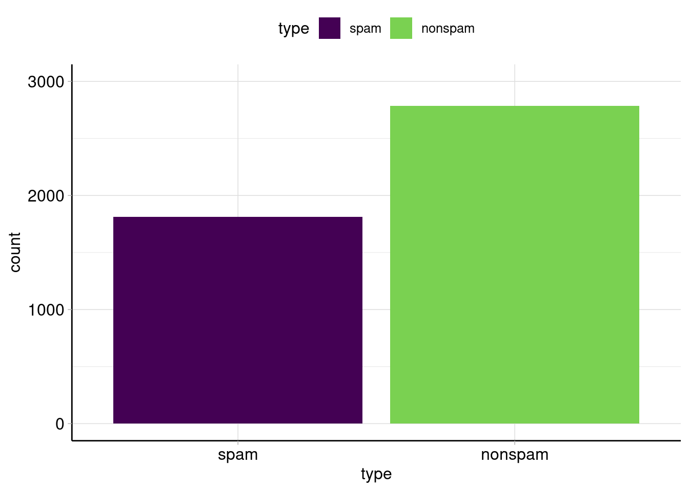
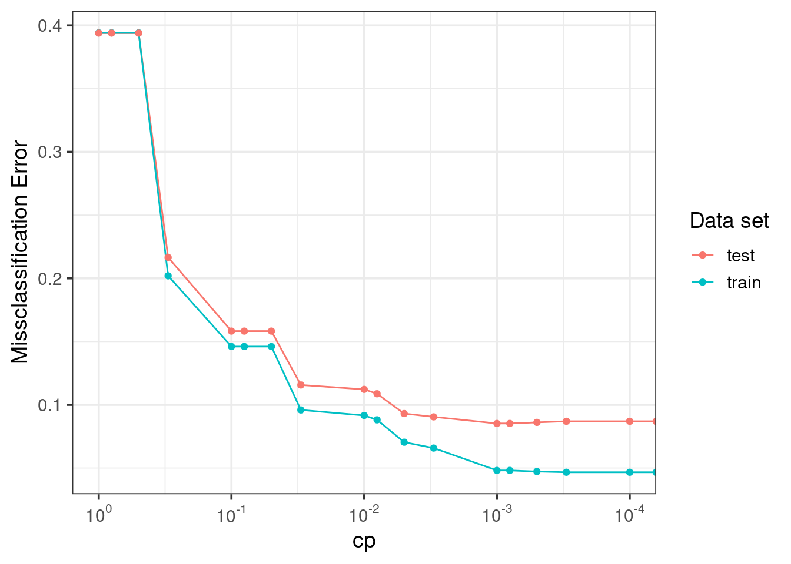
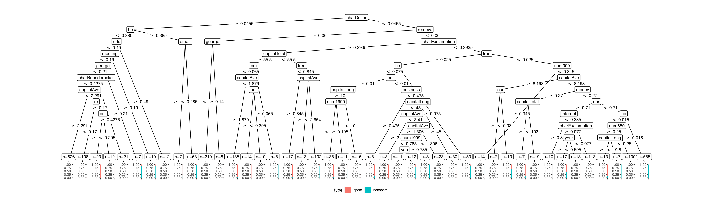
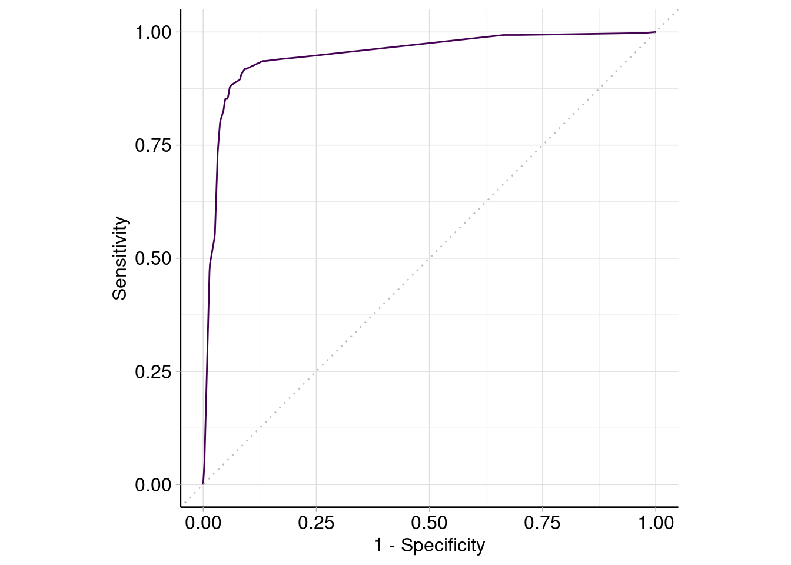
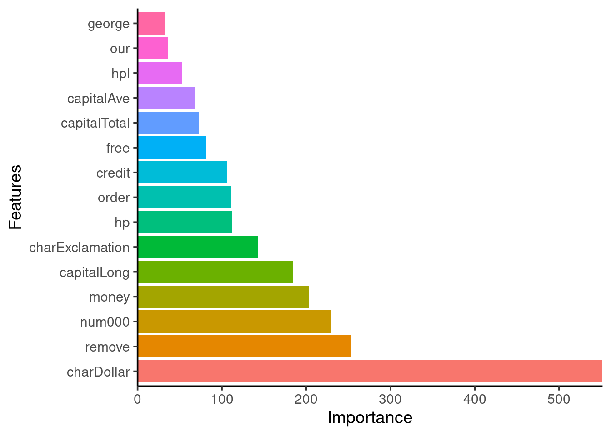
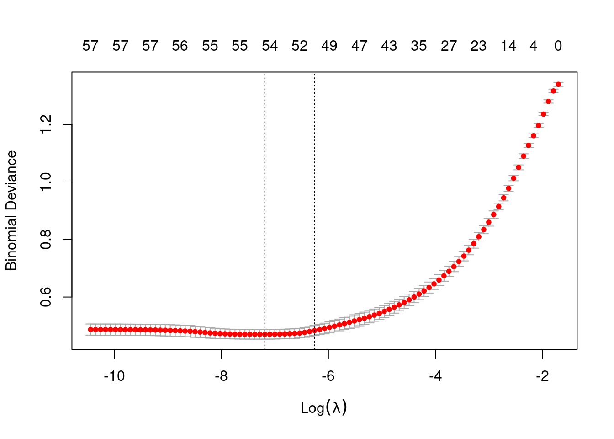
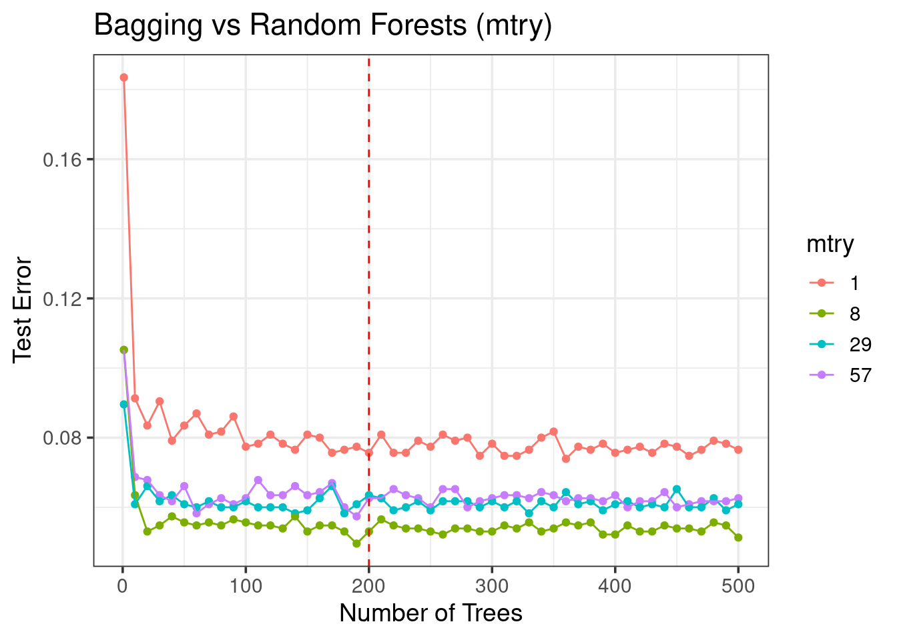
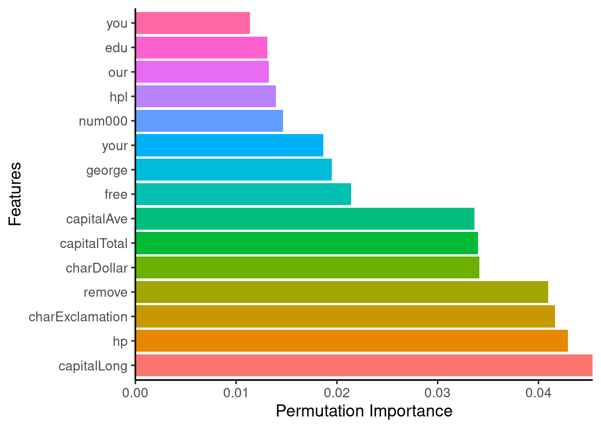
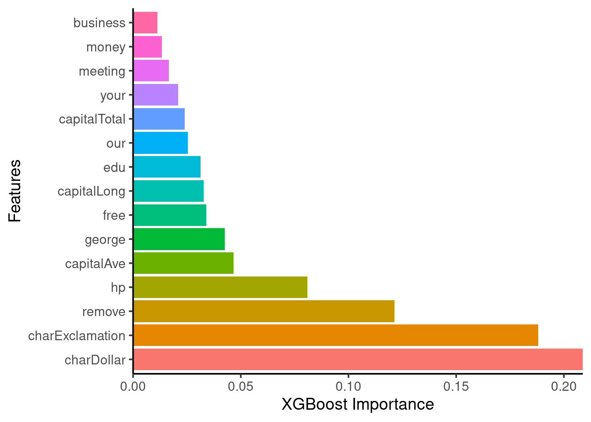
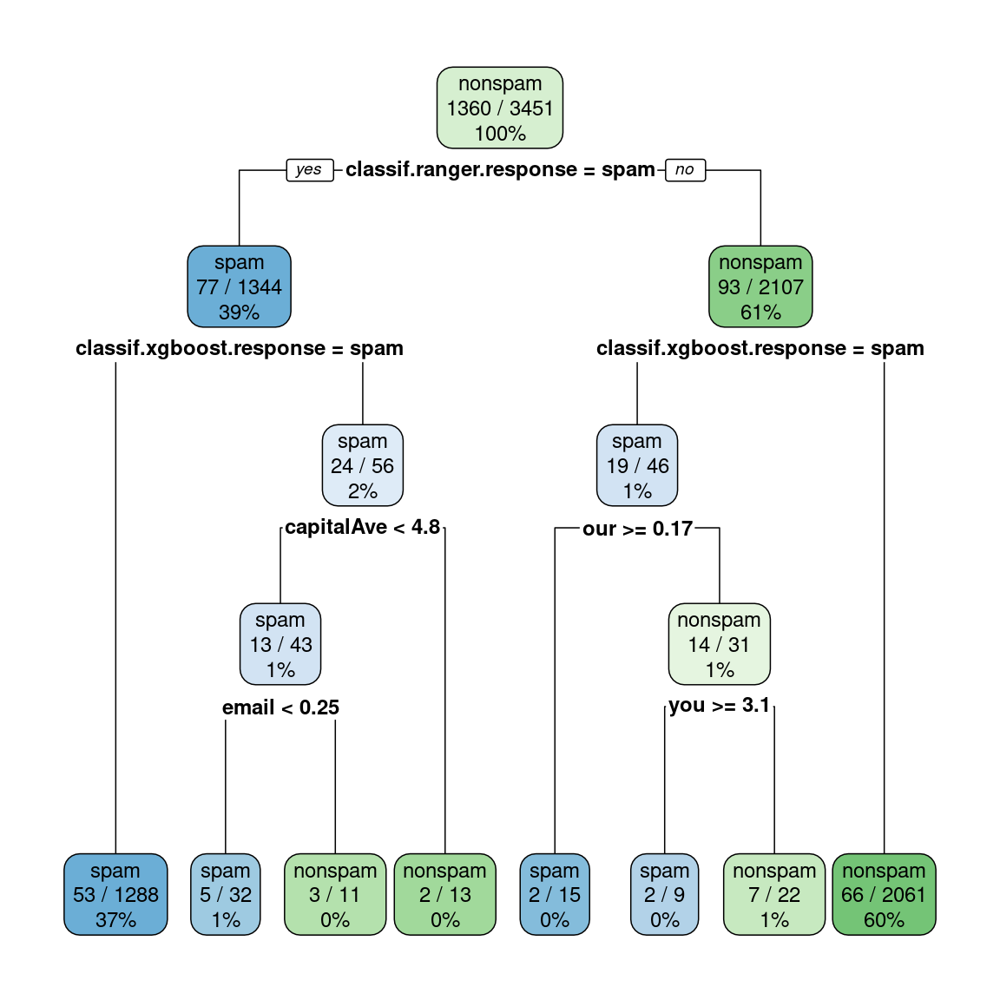

Spam Dataset Prediction using various ML models
Last updated: 30 November, 2022
Libraries
library(mlr3verse)
library(tidyverse)
library(precrec)
library(scales)
library(rpart) # trees
library(glmnet) # lasso
library(ranger) # random forest/bagged trees
library(xgboost) # boosted trees
library(e1071) # SVMs
library(nnet) # single-hidden layer neural networksModels
We load the trained models (as these take time to train in a notebook) we are going to use later on:
models = readRDS(file = 'spam/models.rds')Data
Info
task = tsk('spam')
task<TaskClassif:spam> (4601 x 58): HP Spam Detection
* Target: type
* Properties: twoclass
* Features (57):
- dbl (57): address, addresses, all, business, capitalAve,
capitalLong, capitalTotal, charDollar, charExclamation, charHash,
charRoundbracket, charSemicolon, charSquarebracket, conference,
credit, cs, data, direct, edu, email, font, free, george, hp, hpl,
internet, lab, labs, mail, make, meeting, money, num000, num1999,
num3d, num415, num650, num85, num857, order, original, our, over,
parts, people, pm, project, re, receive, remove, report, table,
technology, telnet, will, you, your# task$help()
which(task$missings() > 0) # no missing values, phew!named integer(0)Table visualization
DT::datatable(
# pick some rows to show
data = task$data(rows = sample(x = task$nrow, size = 42)),
caption = 'Sample of spam dataset from UCI ML repo (4601 x 58)',
options = list(searching = FALSE)
) %>%
DT::formatStyle(columns = 'type', backgroundColor =
DT::styleEqual(c('spam', 'nonspam'), c('#f18384', '#9cd49a')))Target class balance
autoplot(task, type = 'target') + ylim(c(0,3000))
task$data(cols = task$target_names) %>%
group_by(type) %>%
tally() %>%
mutate(freq.percent = scales::percent(n/sum(n), accuracy = 0.1))# A tibble: 2 × 3
type n freq.percent
<fct> <int> <chr>
1 spam 1813 39.4%
2 nonspam 2788 60.6% Partition to train and test sets
Stratified dataset partition (train:test ratio => 3:1, 75%:25%)
split = partition(task, ratio = 0.75, stratify = TRUE)How many rows (emails) for training?
length(split$train)[1] 3451task$data(rows = split$train, cols = task$target_names) %>%
group_by(type) %>%
tally() %>%
mutate(freq.percent = scales::percent(n/sum(n), accuracy = 0.1))# A tibble: 2 × 3
type n freq.percent
<fct> <int> <chr>
1 spam 1360 39.4%
2 nonspam 2091 60.6% How many rows (emails) for testing?
length(split$test)[1] 1150task$data(rows = split$test, cols = task$target_names) %>%
group_by(type) %>%
tally() %>%
mutate(freq.percent = scales::percent(n/sum(n), accuracy = 0.1))# A tibble: 2 × 3
type n freq.percent
<fct> <int> <chr>
1 spam 453 39.4%
2 nonspam 697 60.6% Save split
if ((!file.exists('spam/spam_split.rds'))) {
saveRDS(split, file = 'spam/spam_split.rds')
readr::write_lines(x = split$train, file = 'spam/train_index.txt')
}
split = readRDS(file = 'spam/spam_split.rds')
train_indx = split$train
test_indx = split$testTrees
Tree complexity tuning
cp hyperparameter controls the bias-variance trade-off!
if (!file.exists('spam/tree_res.rds')) {
cps = c(0, 0.0001, 0.0003, 0.0005, 0.0008, 0.001, 0.003, 0.005, 0.008, 0.01,
0.03, 0.05, 0.08, 0.1, 0.3, 0.5, 0.8, 1)
data_list = list()
index = 1
for (cp in cps) {
learner = lrn('classif.rpart', cp = cp)
learner$train(task, row_ids = train_indx)
train_error = learner$predict(task, row_ids = train_indx)$score()
test_error = learner$predict(task, row_ids = test_indx )$score()
data_list[[index]] = list(cp = cp, train_error = train_error,
test_error = test_error)
index = index + 1
}
tree_res = dplyr::bind_rows(data_list)
saveRDS(tree_res, file = 'spam/tree_res.rds')
}
tree_res = readRDS(file = 'spam/tree_res.rds')tree_res %>%
tidyr::pivot_longer(cols = c('train_error', 'test_error'), names_to = 'type',
values_to = 'error', names_pattern = '(.*)_') %>%
ggplot(aes(x = cp, y = error, color = type)) +
geom_line() +
geom_point() +
scale_x_continuous(
trans = c('log10', 'reverse'),
#breaks = scales::trans_breaks('log10', function(x) 10^x),
labels = scales::trans_format('log10', scales::math_format(10^.x))
) +
labs(y = 'Missclassification Error') +
theme_bw(base_size = 14) +
guides(color = guide_legend('Data set'))
- Train error > test error!
cpchoice matters! choose \(cp = 0.001\)
Performance
Build model:
tree = lrn('classif.rpart', keep_model = TRUE, cp = 0.001)
tree$predict_type = 'prob'
tree<LearnerClassifRpart:classif.rpart>: Classification Tree
* Model: -
* Parameters: xval=0, keep_model=TRUE, cp=0.001
* Packages: mlr3, rpart
* Predict Types: response, [prob]
* Feature Types: logical, integer, numeric, factor, ordered
* Properties: importance, missings, multiclass, selected_features,
twoclass, weightsTrain tree model:
#tree$train(task, row_ids = train_indx)
tree = models$treeautoplot(tree)
Predictions:
tree_pred = tree$predict(task, row_ids = test_indx)
tree_pred<PredictionClassif> for 1150 observations:
row_ids truth response prob.spam prob.nonspam
5 spam spam 0.95890411 0.04109589
7 spam spam 0.97222222 0.02777778
15 spam spam 0.92105263 0.07894737
---
4590 nonspam nonspam 0.04800000 0.95200000
4593 nonspam nonspam 0.07079646 0.92920354
4595 nonspam nonspam 0.04800000 0.95200000Confusion table:
tree_pred$confusion truth
response spam nonspam
spam 401 46
nonspam 52 651Measure performance? => (Mis)classification error (default)
tree_pred$score() classif.ce
0.08521739 - Various classification performance metrics exist
- Prediction type matters (probability vs class)
mlr_measures$keys(pattern = '^classif') [1] "classif.acc" "classif.auc" "classif.bacc"
[4] "classif.bbrier" "classif.ce" "classif.costs"
[7] "classif.dor" "classif.fbeta" "classif.fdr"
[10] "classif.fn" "classif.fnr" "classif.fomr"
[13] "classif.fp" "classif.fpr" "classif.logloss"
[16] "classif.mauc_au1p" "classif.mauc_au1u" "classif.mauc_aunp"
[19] "classif.mauc_aunu" "classif.mbrier" "classif.mcc"
[22] "classif.npv" "classif.ppv" "classif.prauc"
[25] "classif.precision" "classif.recall" "classif.sensitivity"
[28] "classif.specificity" "classif.tn" "classif.tnr"
[31] "classif.tp" "classif.tpr" ROC and ROC-AUC:
tree_pred$score(msr('classif.auc')) # roc-AUCclassif.auc
0.9494443 autoplot(tree_pred, type = 'roc')
0ther measures for our tree model:
tree_pred$score(msr('classif.acc'))classif.acc
0.9147826 tree_pred$score(msr('classif.bacc'))classif.bacc
0.9096063 tree_pred$score(msr('classif.sensitivity'))classif.sensitivity
0.8852097 tree_pred$score(msr('classif.specificity'))classif.specificity
0.9340029 tree_pred$score(msr('classif.precision'))classif.precision
0.8970917 Feature importance
vimp = tibble::enframe(tree$importance(), name = 'Variable', value = 'Importance')
vimp %>%
mutate(Variable = forcats::fct_reorder(Variable, Importance, .desc = TRUE)) %>%
dplyr::slice(1:15) %>% # keep only the 15 most important
ggplot(aes(x = Variable, y = Importance, fill = Variable)) +
scale_y_continuous(expand = c(0,0)) +
geom_bar(stat = "identity", show.legend = FALSE) +
ggpubr::theme_classic2(base_size = 14) +
labs(y = 'Importance', x = 'Features') +
coord_flip()
Linear Regularized model
Lasso
Model parameters:
lasso = lrn('classif.cv_glmnet')
lasso$param_set$default$nfolds[1] 10lasso$param_set$default$alpha # lasso[1] 1lasso$param_set$default$nlambda # how many regularization parameters to try?[1] 100lasso$param_set$default$s # which lambda to use for prediction?[1] "lambda.1se"lasso$param_set$default$standardize # as it should![1] TRUETrain lasso model:
# lasso$train(task, row_ids = train_indx)
lasso = models$lasso
lasso$model # lots of features!
Call: (if (cv) glmnet::cv.glmnet else glmnet::glmnet)(x = data, y = target, family = "binomial")
Measure: Binomial Deviance
Lambda Index Measure SE Nonzero
min 0.0007552 60 0.4701 0.01648 54
1se 0.0019148 50 0.4833 0.01747 50lambda hyperparameter controls the bias-variance trade-off!
plot(lasso$model)
log(lasso$model$lambda.min)[1] -7.188475log(lasso$model$lambda.1se)[1] -6.258138Confusion matrix:
lasso_pred = lasso$predict(task, row_ids = test_indx)
lasso_pred$confusion truth
response spam nonspam
spam 392 23
nonspam 61 674Misclassification error:
lasso_pred$score()classif.ce
0.07304348 Lasso 2
- Let’s change the measure that
cv.glmnetuses in the cross validation oflambdafrom binomial deviance (probability-based) to the misclassification error (class response-based).
Train new lasso model:
#lasso2 = lasso$clone(deep = TRUE)$reset() # remove trained model
#lasso2$param_set$values = list(type.measure = 'class')
#lasso2$train(task, row_ids = train_indx)
lasso2 = models$lasso2
lasso2$model
Call: (if (cv) glmnet::cv.glmnet else glmnet::glmnet)(x = data, y = target, type.measure = "class", family = "binomial")
Measure: Misclassification Error
Lambda Index Measure SE Nonzero
min 0.0002473 72 0.07186 0.004849 55
1se 0.0010957 56 0.07650 0.004439 53Confusion matrix:
lasso2_pred = lasso2$predict(task, row_ids = test_indx)
lasso2_pred$confusion truth
response spam nonspam
spam 394 26
nonspam 59 671Misclassification error:
lasso2_pred$score()classif.ce
0.07391304 - Better than a tuned tree model!
Bagging and Random Forests
nfeats = length(task$feature_names)
base_rf = lrn('classif.ranger', verbose = FALSE, num.threads = 16)
base_rf<LearnerClassifRanger:classif.ranger>
* Model: -
* Parameters: num.threads=16, verbose=FALSE
* Packages: mlr3, mlr3learners, ranger
* Predict Types: [response], prob
* Feature Types: logical, integer, numeric, character, factor, ordered
* Properties: hotstart_backward, importance, multiclass, oob_error,
twoclass, weightsTrain and test RFs with different num.trees and mtry:
if (!file.exists('spam/forest_res.rds')) {
ntrees = c(1, seq(from = 10, to = 500, by = 10))
mtrys = c(nfeats, ceiling(nfeats/2), ceiling(sqrt(nfeats)), 1)
data_list = list()
index = 1
for (num.trees in ntrees) {
for (mtry in mtrys) {
message('#Trees: ', num.trees, ', mtry: ', mtry)
base_rf$reset()
base_rf$param_set$values$num.trees = num.trees
base_rf$param_set$values$mtry = mtry
# train model, get train set, test set and OOB errors
base_rf$train(task, train_indx)
train_error = base_rf$predict(task, train_indx)$score()
test_error = base_rf$predict(task, test_indx )$score()
oob_error = base_rf$oob_error()
train_time = base_rf$timings['train'] # in secs
data_list[[index]] = tibble::tibble(ntrees = num.trees, mtry = mtry,
train_time = train_time, train_error = train_error,
test_error = test_error, oob_error = oob_error)
index = index + 1
}
}
forest_res = dplyr::bind_rows(data_list)
saveRDS(forest_res, file = 'spam/forest_res.rds')
}
forest_res = readRDS(file = 'spam/forest_res.rds')Tuning num.trees and mtry
forest_res %>%
mutate(mtry = as.factor(mtry)) %>%
ggplot(aes(x = ntrees, y = test_error, color = mtry)) +
geom_point() +
geom_line() +
geom_vline(xintercept = 200, color = 'red', linetype = 'dashed') +
labs(y = 'Test Error', x = 'Number of Trees',
title = 'Bagging vs Random Forests (mtry)') +
theme_bw(base_size = 14)
- Not all trees are needed!
- Tuning
mtryis important! - RFs is a better model than bagged trees
Training time
forest_res %>%
mutate(mtry = as.factor(mtry)) %>%
ggplot(aes(x = ntrees, y = train_time, color = mtry)) +
geom_point() +
geom_line() +
geom_vline(xintercept = 200, color = 'red', linetype = 'dashed') +
labs(y = 'Time to train Forest (secs)', x = 'Number of Trees',
title = 'Parallelized training using 16 cores') +
theme_bw(base_size = 14)
- Parallelization is important!
OOB vs test error
forest_res %>%
filter(mtry == 8) %>%
tidyr::pivot_longer(cols = ends_with('error'), names_pattern = '(.*)_error',
names_to = 'type', values_to = 'error') %>%
ggplot(aes(x = ntrees, y = error, color = type)) +
geom_line() +
labs(x = 'Number of Trees', y = 'Misclassification Error',
title = 'Out-Of-Bag error for generalization',
subtitle = 'mtry = 8 features') +
theme_bw(base_size = 14)
- OOB error is a good approximation of the generalization error!
Performance
Let’s use \(num.trees=200\) and \(mtry=57\) (all features) for the bagged ensemble tree model while \(mtry=8\) (square root of #features) for the random forest model:
bagged_trees = base_rf$clone(deep = TRUE)$reset()
random_forest = base_rf$clone(deep = TRUE)$reset()
bagged_trees$param_set$values$num.trees = 200
bagged_trees$param_set$values$mtry = nfeats
random_forest$param_set$values$num.trees = 200
random_forest$param_set$values$mtry = 8
random_forest$param_set$values$importance = 'permutation'
bagged_trees$train(task, train_indx)
random_forest$train(task, train_indx)Trained random forest model:
random_forest = models$random_forest
random_forest$modelRanger result
Call:
ranger::ranger(dependent.variable.name = task$target_names, data = task$data(), probability = self$predict_type == "prob", case.weights = task$weights$weight, num.threads = 16L, verbose = FALSE, num.trees = 200L, mtry = 8L, importance = "permutation")
Type: Classification
Number of trees: 200
Sample size: 3451
Number of independent variables: 57
Mtry: 8
Target node size: 1
Variable importance mode: permutation
Splitrule: gini
OOB prediction error: 4.67 % Bagged trees prediction performance:
bagged_trees = models$bagged_trees
bt_pred = bagged_trees$predict(task, test_indx)
bt_pred$confusion truth
response spam nonspam
spam 405 29
nonspam 48 668bt_pred$score()classif.ce
0.06695652 Random forest prediction performance:
rf_pred = random_forest$predict(task, test_indx)
rf_pred$confusion truth
response spam nonspam
spam 412 22
nonspam 41 675rf_pred$score()classif.ce
0.05478261 - Bagged trees show better performance (lower error) on the test set compared to Lasso
- Random forests do even better than bagged trees (as expected)
Feature Importance
rf_vimp = tibble::enframe(random_forest$importance(), name = 'Variable',
value = 'Importance')
rf_vimp %>%
mutate(Variable = forcats::fct_reorder(Variable, Importance, .desc = TRUE)) %>%
dplyr::slice(1:15) %>% # keep only the 15 most important
ggplot(aes(x = Variable, y = Importance, fill = Variable)) +
scale_y_continuous(expand = c(0,0)) +
geom_bar(stat = "identity", show.legend = FALSE) +
ggpubr::theme_classic2(base_size = 14) +
labs(y = 'Permutation Importance', x = 'Features') +
coord_flip()
- RF feature importance != single tree feature importance (but top features are approximately the same)
Gradient-boosted Trees
base_xgboost = lrn('classif.xgboost', nthread = 8,
nrounds = 150, max_depth = 5, eta = 0.3)
base_xgboost<LearnerClassifXgboost:classif.xgboost>
* Model: -
* Parameters: nrounds=150, nthread=8, verbose=0,
early_stopping_set=none, max_depth=5, eta=0.3
* Packages: mlr3, mlr3learners, xgboost
* Predict Types: [response], prob
* Feature Types: logical, integer, numeric
* Properties: hotstart_forward, importance, missings, multiclass,
twoclass, weightsTuning XGBoost
Train and test GB trees with different:
nrounds(how many trees/boosting iterations)max_depth(how large can each tree grow)eta(learning rate)
if (!file.exists('spam/xgboost_res.rds')) {
max_depths = c(1,3,5,7) # how large is each tree?
etas = c(0.001, 0.01, 0.1, 0.3) # learning rate
nrounds = c(1, seq(from = 25, to = 1500, by = 25)) # number of trees
param_grid = data.table::CJ(nrounds = nrounds, max_depth = max_depths,
eta = etas, sorted = FALSE)
data_list = list()
index = 1
for (row_id in 1:nrow(param_grid)) {
max_depth = param_grid[row_id]$max_depth
nrounds = param_grid[row_id]$nrounds
eta = param_grid[row_id]$eta
message('#Trees: ', nrounds, ', max_depth: ', max_depth, ', eta: ', eta)
base_xgboost$reset()
base_xgboost$param_set$values$nrounds = nrounds
base_xgboost$param_set$values$max_depth = max_depth
base_xgboost$param_set$values$eta = eta
# train model, get train set, test set and OOB errors
base_xgboost$train(task, train_indx)
train_error = base_xgboost$predict(task, train_indx)$score()
test_error = base_xgboost$predict(task, test_indx )$score()
train_time = base_xgboost$timings['train'] # in secs
data_list[[row_id]] = tibble::tibble(nrounds = nrounds,
max_depth = max_depth, eta = eta, train_time = train_time,
train_error = train_error, test_error = test_error)
}
xgboost_res = dplyr::bind_rows(data_list)
saveRDS(xgboost_res, file = 'spam/xgboost_res.rds')
}Effect of max_depth vs nrounds
xgboost_res = readRDS(file = 'spam/xgboost_res.rds')
xgboost_res %>%
filter(eta == 0.01) %>%
mutate(max_depth = as.factor(max_depth)) %>%
ggplot(aes(x = nrounds, y = test_error, color = max_depth)) +
geom_point() +
geom_line() +
labs(y = 'Test Error', x = 'Number of Trees (Boosting Iterations)',
title = 'Effect of max_depth on test error (eta = 0.01)') +
theme_bw(base_size = 14)
- Best: \(max_depth = 5\)
Effect of eta vs nrounds
xgboost_res %>%
filter(max_depth == 5) %>%
mutate(eta = as.factor(eta)) %>%
ggplot(aes(x = nrounds, y = test_error, color = eta)) +
geom_point() +
geom_line() +
labs(y = 'Test Error', x = 'Number of Trees (Boosting Iterations)',
title = 'Effect of eta (learning rate) on test error (max_depth = 5)') +
theme_bw(base_size = 14)
etasmall => slow trainingetalarge => overfitting occurs!- Choose \(eta=0.01\) and \(nrounds=1000\) for final model
Training time
xgboost_res %>%
filter(eta == 0.01) %>%
mutate(max_depth = as.factor(max_depth)) %>%
ggplot(aes(x = nrounds, y = train_time, color = max_depth)) +
geom_point() +
geom_line() +
labs(y = 'Time to train (secs)', x = 'Number of Trees (Boosting Iterations)',
title = 'Parallelized training using 8 cores (eta = 0.01)') +
theme_bw(base_size = 14)
xgboost_res %>%
filter(max_depth == 5) %>%
mutate(eta = as.factor(eta)) %>%
ggplot(aes(x = nrounds, y = train_time, color = eta)) +
geom_point() +
geom_line() +
labs(y = 'Time to train (secs)', x = 'Number of Trees (Boosting Iterations)',
title = 'Parallelized training using 8 cores (max_depth = 5)') +
theme_bw(base_size = 14)
- More trees (
nrounds) => more training time - Growing larger trees (
max_depth) takes more time etanot so important for faster training in this dataset
Performance
Let’s use \(nrounds=1000\), \(max\_depth=5\) and \(eta=0.01\):
xgb = base_xgboost$clone(deep = TRUE)$reset()
xgb$param_set$values$nrounds = 1000
xgb$param_set$values$max_depth = 5
xgb$param_set$values$eta = 0.01
# `logloss` is the default (negative log-likelihood)
# loss function used in xgboost for classification
# but we can change that to misclassification error
# see https://xgboost.readthedocs.io/en/stable/parameter.html#learning-task-parameters
# xgb$param_set$values$eval_metric = 'error'
xgb$train(task, train_indx)xgb = models$xgb
xgb$model##### xgb.Booster
Handle is invalid! Suggest using xgb.Booster.complete
raw: 1.6 Mb
call:
xgboost::xgb.train(data = data, nrounds = 1000L, verbose = 0L,
nthread = 8L, max_depth = 5L, eta = 0.01, objective = "binary:logistic",
eval_metric = "logloss")
params (as set within xgb.train):
nthread = "8", max_depth = "5", eta = "0.01", objective = "binary:logistic", eval_metric = "logloss", validate_parameters = "TRUE"
# of features: 57
niter: 1000
nfeatures : 57 Confusion matrix:
xgb_pred = xgb$predict(task, test_indx)
xgb_pred$confusion truth
response spam nonspam
spam 420 22
nonspam 33 675Misclassification error:
xgb_pred$score()classif.ce
0.04782609 - GBoosted trees have even better performance than random forests
Feature importance
- Use
xgboost::xgb.importance()function
xgb_vimp = tibble::enframe(xgb$importance(), name = 'Variable',
value = 'Importance')
xgb_vimp %>%
mutate(Variable = forcats::fct_reorder(Variable, Importance, .desc = TRUE)) %>%
dplyr::slice(1:15) %>% # keep only the 15 most important
ggplot(aes(x = Variable, y = Importance, fill = Variable)) +
scale_y_continuous(expand = c(0,0)) +
geom_bar(stat = "identity", show.legend = FALSE) +
ggpubr::theme_classic2(base_size = 14) +
labs(y = 'XGBoost Importance', x = 'Features') +
coord_flip()
SVMs
base_svm = lrn('classif.svm')
base_svm$param_set$values$type = 'C-classification'Let’s train a SVM model with a polynomial kernel:
poly_svm = base_svm$clone(deep = TRUE)
poly_svm$param_set$values$kernel = 'polynomial'
poly_svm$param_set$values$degree = 3
poly_svm$param_set$values$cost = 1000 # cost => bias-variance tradeoff
poly_svm$train(task, row_ids = train_indx)poly_svm = models$poly_svm
poly_svm$model
Call:
svm.default(x = data, y = task$truth(), type = "C-classification",
kernel = "polynomial", degree = 3L, cost = 1000, probability = (self$predict_type ==
"prob"))
Parameters:
SVM-Type: C-classification
SVM-Kernel: polynomial
cost: 1000
degree: 3
coef.0: 0
Number of Support Vectors: 776Misclassification error:
svm_pred = poly_svm$predict(task, row_ids = test_indx)
svm_pred$score()classif.ce
0.06695652 Let’s train a SVM model with a radial basis kernel:
radial_svm = base_svm$clone(deep = TRUE)
radial_svm$param_set$values$kernel = 'radial'
radial_svm$param_set$values$gamma = 0.01
radial_svm$param_set$values$cost = 3
radial_svm$train(task, row_ids = train_indx)radial_svm = models$radial_svm
radial_svm$model
Call:
svm.default(x = data, y = task$truth(), type = "C-classification",
kernel = "radial", gamma = 0.01, cost = 3, probability = (self$predict_type ==
"prob"))
Parameters:
SVM-Type: C-classification
SVM-Kernel: radial
cost: 3
Number of Support Vectors: 872Misclassification error:
svm_pred = radial_svm$predict(task, row_ids = test_indx)
svm_pred$score() # ~5.2%classif.ce
0.05217391 - The results above were from manual tuning => I played around with the hyperparameters
cost,gamma,degree, until I got a better (lower) error. - Can we do better? Well, it is difficult to properly tune these complex models! I tried a bit of Bayesian Optimization tuning (see tuning_svms_on_spam.R) and got \(\approx 6\%\) error - so nothing too great.
Neural Networks
Single-layer NN
nnet = lrn('classif.nnet', size = 20, MaxNWts = 10000, maxit = 500)
nnet$train(task, row_ids = train_indx)nnet = models$nnet
nnet<LearnerClassifNnet:classif.nnet>
* Model: nnet.formula
* Parameters: size=20, MaxNWts=10000, maxit=500
* Packages: mlr3, mlr3learners, nnet
* Predict Types: response, [prob]
* Feature Types: numeric, factor, ordered
* Properties: multiclass, twoclass, weightsnnet$modela 57-20-1 network with 1181 weights
inputs: address addresses all business capitalAve capitalLong capitalTotal charDollar charExclamation charHash charRoundbracket charSemicolon charSquarebracket conference credit cs data direct edu email font free george hp hpl internet lab labs mail make meeting money num000 num1999 num3d num415 num650 num85 num857 order original our over parts people pm project re receive remove report table technology telnet will you your
output(s): type
options were - entropy fitting nnet$predict(task, test_indx)$score() # ~5.4%classif.ce
0.05478261 Multi-layer NN
- We switch to python for this! See http://tiny.cc/spam-nn
Stacked model
We are going to make a 2-level staking model using base models we have already seen. We will use the implementation from mlr3pipelines::mlr_graphs_stacking.
Visualize stacked learner:
base_learners = list(
lrn('classif.cv_glmnet', type.measure = 'class'), # Lasso
lrn('classif.ranger', verbose = FALSE, num.threads = 16,
num.trees = 200, mtry = 8), # RFs
lrn('classif.xgboost', nthread = 8, nrounds = 1000,
max_depth = 5, eta = 0.01), # XGBoost
lrn('classif.svm', type = 'C-classification', kernel = 'radial',
gamma = 0.01, cost = 3) # SVM
)
super_learner = lrn('classif.rpart', keep_model = TRUE, cp = 0.001) # tree
graph_stack = mlr3pipelines::pipeline_stacking(
base_learners, super_learner, folds = 5, use_features = TRUE
)
graph_stack$plot(html = TRUE)stacked_lrn = as_learner(graph_stack)
stacked_lrn
stacked_lrn$train(task, row_ids = train_indx)Many parameters!
stacked_lrn = models$stacked_lrn
stacked_lrn<GraphLearner:classif.cv_glmnet.classif.ranger.classif.xgboost.classif.svm.nop.featureunion.classif.rpart>
* Model: list
* Parameters: classif.cv_glmnet.resampling.method=cv,
classif.cv_glmnet.resampling.folds=5,
classif.cv_glmnet.resampling.keep_response=FALSE,
classif.cv_glmnet.type.measure=class,
classif.ranger.resampling.method=cv,
classif.ranger.resampling.folds=5,
classif.ranger.resampling.keep_response=FALSE, classif.ranger.mtry=8,
classif.ranger.num.threads=16, classif.ranger.num.trees=200,
classif.ranger.verbose=FALSE, classif.xgboost.resampling.method=cv,
classif.xgboost.resampling.folds=5,
classif.xgboost.resampling.keep_response=FALSE,
classif.xgboost.early_stopping_set=none, classif.xgboost.eta=0.01,
classif.xgboost.max_depth=5, classif.xgboost.nrounds=1000,
classif.xgboost.nthread=8, classif.xgboost.verbose=0,
classif.svm.resampling.method=cv, classif.svm.resampling.folds=5,
classif.svm.resampling.keep_response=FALSE, classif.svm.cost=3,
classif.svm.gamma=0.01, classif.svm.kernel=radial,
classif.svm.type=C-classification, classif.rpart.xval=0,
classif.rpart.keep_model=TRUE, classif.rpart.cp=0.001
* Packages: mlr3, mlr3pipelines, rpart
* Predict Types: [response], prob
* Feature Types: logical, integer, numeric, character, factor, ordered,
POSIXct
* Properties: featureless, hotstart_backward, hotstart_forward,
importance, loglik, missings, multiclass, oob_error,
selected_features, twoclass, weightsOutput tree model:
rpart.plot::rpart.plot(stacked_lrn$model$classif.rpart$model,
digits = 2, extra = 103)
Misclassification error:
stack_pred = stacked_lrn$predict(task, row_ids = test_indx)
stack_pred$score()classif.ce
0.04869565 Final Benchmark
res = lapply(models, function(model) {
model$predict(task, test_indx)$score()
})
dplyr::bind_rows(res) %>%
add_column(model = names(res), .before = 1) %>%
mutate(classif.ce = num(100*classif.ce, digits = 2)) %>%
arrange(classif.ce)# A tibble: 10 × 2
model classif.ce
<chr> <num:.2!>
1 xgb 4.78
2 stacked_lrn 4.87
3 radial_svm 5.22
4 nnet 5.48
5 random_forest 5.57
6 bagged_trees 6.70
7 poly_svm 6.70
8 lasso 7.30
9 lasso2 7.39
10 tree 8.52R Session Info
xfun::session_info()R version 4.2.1 (2022-06-23)
Platform: x86_64-pc-linux-gnu (64-bit)
Running under: Ubuntu 20.04.5 LTS
Locale:
LC_CTYPE=en_US.UTF-8 LC_NUMERIC=C
LC_TIME=en_US.UTF-8 LC_COLLATE=en_US.UTF-8
LC_MONETARY=en_US.UTF-8 LC_MESSAGES=en_US.UTF-8
LC_PAPER=en_US.UTF-8 LC_NAME=C
LC_ADDRESS=C LC_TELEPHONE=C
LC_MEASUREMENT=en_US.UTF-8 LC_IDENTIFICATION=C
Package version:
askpass_1.1 assertthat_0.2.1
backports_1.4.1 base64enc_0.1.3
bbotk_0.7.0 bit_4.0.4
bit64_4.0.5 blob_1.2.3
bookdown_0.30 broom_1.0.1
bslib_0.4.0 cachem_1.0.6
callr_3.7.3 cellranger_1.1.0
checkmate_2.1.0 class_7.3-20
cli_3.4.1 clipr_0.8.0
clue_0.3-61 cluster_2.1.3
clusterCrit_1.2.8 codetools_0.2-18
colorspace_2.0-3 compiler_4.2.1
cpp11_0.4.3 crayon_1.5.2
crosstalk_1.2.0 curl_4.3.3
data.table_1.14.4 DBI_1.1.3
dbplyr_2.2.1 digest_0.6.30
dplyr_1.0.10 DT_0.26
dtplyr_1.2.2 e1071_1.7-12
ellipsis_0.3.2 evaluate_0.18
fansi_1.0.3 farver_2.1.1
fastmap_1.1.0 forcats_0.5.2
foreach_1.5.2 fs_1.5.2
future_1.29.0 future.apply_1.10.0
gargle_1.2.1 generics_0.1.3
ggplot2_3.4.0 glmnet_4.1-4
globals_0.16.1 glue_1.6.2
googledrive_2.0.0 googlesheets4_1.0.1
graphics_4.2.1 grDevices_4.2.1
grid_4.2.1 gridExtra_2.3
gtable_0.3.1 haven_2.5.1
highr_0.9 hms_1.1.2
htmltools_0.5.3 htmlwidgets_1.5.4
httr_1.4.4 ids_1.0.1
igraph_1.3.5 isoband_0.2.6
iterators_1.0.14 jquerylib_0.1.4
jsonlite_1.8.3 knitr_1.40
labeling_0.4.2 later_1.3.0
lattice_0.20-45 lazyeval_0.2.2
lgr_0.4.4 lifecycle_1.0.3
listenv_0.8.0 lubridate_1.9.0
magrittr_2.0.3 MASS_7.3.57
Matrix_1.5-1 memoise_2.0.1
methods_4.2.1 mgcv_1.8.40
mime_0.12 mlbench_2.1.3
mlr3_0.14.1 mlr3cluster_0.1.5
mlr3data_0.6.1 mlr3extralearners_0.5.49-000
mlr3filters_0.6.0 mlr3fselect_0.7.2
mlr3hyperband_0.4.3 mlr3learners_0.5.5
mlr3measures_0.5.0 mlr3misc_0.11.0
mlr3pipelines_0.4.2 mlr3tuning_0.16.0
mlr3tuningspaces_0.3.1 mlr3verse_0.2.6
mlr3viz_0.5.10 modelr_0.1.9
munsell_0.5.0 nlme_3.1.157
nnet_7.3-17 openssl_2.0.3
palmerpenguins_0.1.1 paradox_0.10.0
parallel_4.2.1 parallelly_1.32.1
pillar_1.8.1 pkgconfig_2.0.3
precrec_0.13.0 prettyunits_1.1.1
processx_3.7.0 progress_1.2.2
promises_1.2.0.1 proxy_0.4-27
PRROC_1.3.1 ps_1.7.1
purrr_0.3.5 R6_2.5.1
ranger_0.14.1 rappdirs_0.3.3
RColorBrewer_1.1.3 Rcpp_1.0.9
RcppEigen_0.3.3.9.2 readr_2.1.3
readxl_1.4.1 rematch_1.0.1
rematch2_2.1.2 reprex_2.0.2
rlang_1.0.6 rmarkdown_2.17
rpart_4.1.19 rstudioapi_0.14
rvest_1.0.3 sass_0.4.2
scales_1.2.1 selectr_0.4.2
shape_1.4.6 splines_4.2.1
stats_4.2.1 stringi_1.7.8
stringr_1.4.1 survival_3.4-0
sys_3.4 tibble_3.1.8
tidyr_1.2.1 tidyselect_1.2.0
tidyverse_1.3.2 timechange_0.1.1
tinytex_0.42 tools_4.2.1
tzdb_0.3.0 utf8_1.2.2
utils_4.2.1 uuid_1.1-0
vctrs_0.5.1 viridis_0.6.2
viridisLite_0.4.1 visNetwork_2.1.2
vroom_1.6.0 withr_2.5.0
xfun_0.33 xgboost_1.6.0.1
xml2_1.3.3 yaml_2.3.5